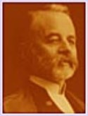

Beaubien-Perrault-Benington - Person Sheet
Beaubien-Perrault-Benington - Person Sheet

NameCharles Panet (3)47
Birth17 Dec 1838, Québec, Québec
Death15 Apr 1886, Ottawa, Ontario
Occupationavocat
FatherCharles Panet (1797-1871)
MotherFrances O'donnell (~1799-1883)
Notes for Charles Panet (3)
[Roy] avocat 1859. Greffier des Bills Prives a Chambre des Communes
1874.
21Né à Québec le 17 décembre 1838, il était le fils de Charles Panet, avocat, qui fut député du comté de Québec, et de Frances O'Donnell. Admis au barreau le 5 décembre 1859, il exerça sa profession pendant quelques années à Québec puis entra dans le service civil. Lors de la Confédération, il suivit le gouvernement, à. Ottawa. En juillet 1874, M. Panet fut nommé greffier des bills privés de la Chambre des Communes. Il décéda à Ottawa le 15 avril 1886. Père de lady Taschereau.
1874.
21Né à Québec le 17 décembre 1838, il était le fils de Charles Panet, avocat, qui fut député du comté de Québec, et de Frances O'Donnell. Admis au barreau le 5 décembre 1859, il exerça sa profession pendant quelques années à Québec puis entra dans le service civil. Lors de la Confédération, il suivit le gouvernement, à. Ottawa. En juillet 1874, M. Panet fut nommé greffier des bills privés de la Chambre des Communes. Il décéda à Ottawa le 15 avril 1886. Père de lady Taschereau.